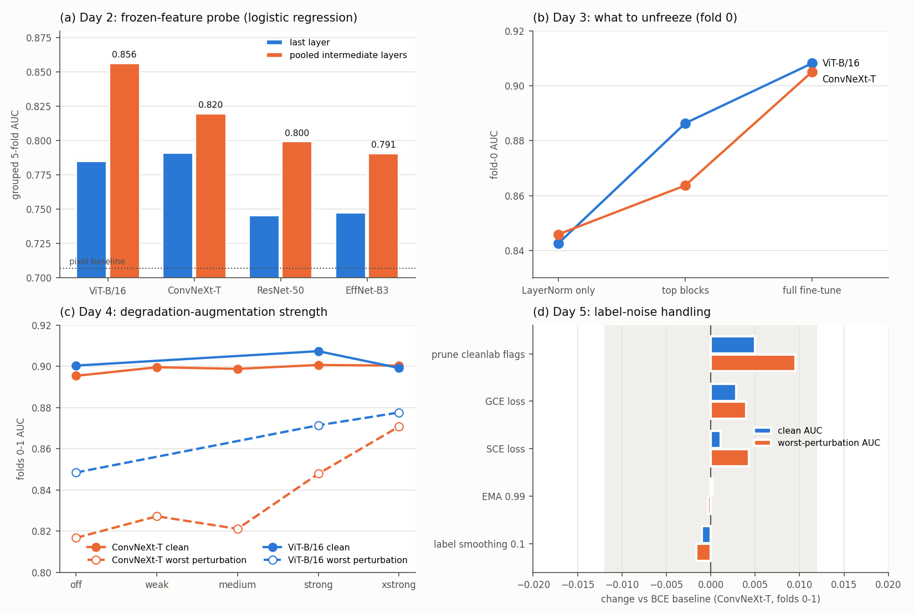
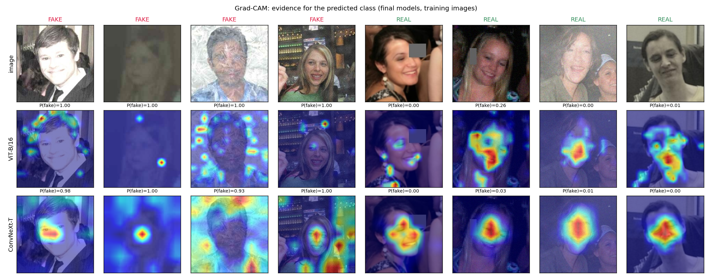

The task is binary classification of 224×224 face images as real or fake, scored mainly by ROC-AUC, with extra weight on robustness to unseen image degradations and to fake-generation methods not in the training set. Only the provided 7,000 training images (50.3% fake) and ImageNet-pretrained backbones may be used.
Three properties of the data shaped every decision:
The final model is an ensemble of a ViT-B/16 and a ConvNeXt-T, each fully fine-tuned with degradation
augmentation on the training set minus the 677 images flagged as likely mislabelled, 3 seeds each, with flip
test-time augmentation. Every choice below was screened on the same grouped folds and logged in
experiments/results.csv (46 runs).
StratifiedGroupKFold on the cluster id (seed 42), frozen to data/folds.csv.
A unit test asserts no cluster spans two folds, full coverage, class balance and label consistency.| Member | Family | Params | Pretraining | Fine-tune recipe | 5-fold OOF AUC |
|---|---|---|---|---|---|
| ViT-B/16 | Transformer | 85.8M | ImageNet-21k → 1k (timm augreg2) | full, lr 5e-5, strong degradation aug. | 0.908 |
| ConvNeXt-T | CNN | 27.8M | ImageNet-22k → 1k (timm fb) | full, lr 1e-4, extra-strong degradation aug. | 0.902 |
Each backbone gets a new single-logit linear head. The standardisation constants μ, σ are the mean and standard deviation of each member's clean OOF logits (training data only) and are stored in the weights file; nothing is fitted on test data. Weights: 0.7/0.3, chosen on OOF from a flat optimum (0.6–0.8 all within 0.0002 AUC).
| Setup (5-fold OOF) | Clean | Unseen mean | Robust mean | Worst |
|---|---|---|---|---|
| ViT-B/16 alone | 0.9078 | 0.9011 | 0.9037 | 0.8818 |
| ConvNeXt-T alone | 0.9022 | 0.8942 | 0.8984 | 0.8698 |
| Equal-weight z-logit average | 0.9080 | 0.9022 | 0.9047 | 0.8854 |
| Probability average | 0.9075 | 0.9014 | 0.9041 | 0.8837 |
| Rank average | 0.9080 | 0.9022 | 0.9047 | 0.8853 |
| z-logit, 0.7 / 0.3 (shipped) | 0.9086 | 0.9028 | 0.9052 | 0.8861 |
| + EfficientNet-B3 (folds 0–1 only, weight 0.1) | no gain; equal weight hurts (worst −0.009) | |||
The members come from different families (self-attention over patches vs. hierarchical convolutions, different pretraining corpora and augmentation strength). Their OOF logits have Spearman 0.94, so they fail on partly different images. The clean gain is small (+0.001, within noise per fold), but the worst-case gain (+0.004) and unseen-family gain (+0.002) are consistent, and the second family is a hedge against the generator shift we cannot measure. An EfficientNet-B3 member was more diverse (Spearman 0.74) but much weaker (0.83) and was dropped. Flip TTA (fold 0, same model): ViT clean 0.9111 → 0.9129, worst 0.8862 → 0.8893; ConvNeXt worst 0.8813 → 0.8838.

experiments/results.csv by scripts/evidence_figure.py.
(a) Frozen probe: intermediate layers beat the last layer for every backbone; ViT-B leads. (b) Full fine-tuning
beats partial and LayerNorm-only tuning by 0.02–0.06. (c) Degradation augmentation barely moves clean AUC but lifts
worst-case AUC by up to 0.054. (d) Pruning cleanlab-flagged images gives the largest gain on both metrics;
the shaded band is the ±0.012 two-fold noise level.| Choice | Options screened | Picked | Evidence |
|---|---|---|---|
| Backbone | ViT-B/16, ConvNeXt-T, ResNet-50, EfficientNet-B3 (probe) | ViT-B/16 + ConvNeXt-T | Probe AUC 0.857 / 0.820 vs 0.800 / 0.791 |
| Tuning regime | LayerNorm-only, top blocks, full | full | Fold 0: ViT 0.843 / 0.886 / 0.908; ConvNeXt 0.846 / 0.864 / 0.905 |
| LR, epochs | ViT 2e-5 – 5e-5; ConvNeXt 5e-5 – 1e-4; 4–10 epochs | 5e-5 / 1e-4, 4 epochs | Longer runs overfit after epoch 2–3 (train loss → 0.01); at 4 epochs last ≈ best epoch; 6 epochs with aug: 0.896 vs 0.901 |
| Augmentation strength | off, weak, medium, strong, xstrong | ViT strong, ConvNeXt xstrong | Worst-case 0.848 → 0.871 (ViT), 0.817 → 0.871 (ConvNeXt); unseen mean +0.012 / +0.015 |
| Label noise | BCE, label smoothing 0.1, GCE q0.7, SCE, pruning, EMA 0.99 | pruning (677 images) | ConvNeXt +0.005 clean / +0.010 worst; confirmed on ViT: +0.001 / +0.011 |
| Combination | z-logit, probability, rank; weights 0.5–1.0 | z-logit 0.7/0.3 | Table in Section 3 |
| Threshold | 0.40 – 0.60 on OOF | 0.5 | Best accuracy 0.874, F1 0.874; predicts 50.2% fake (true 50.3%) |
prune_by_noise_rate) on the averaged 5-fold OOF probabilities of the
Day 3 ViT and ConvNeXt; the 677 flagged images (330 given-real, 347 given-fake) are removed from training folds only,
never from validation.scripts/pack_weights.py).| Model (grouped 5-fold OOF unless stated) | AUC [95% cluster CI] | Seen | Unseen | Worst |
|---|---|---|---|---|
| Logistic regression on 32×32 pixels (Day 1) | 0.707 [0.694–0.720] | — | ||
| ViT-B probe, intermediate layers (Day 2) | 0.857 | worst 0.827 (8 perturbations) | ||
| ViT-B full fine-tune, no degradation aug (Day 3) | 0.898 [0.890–0.907] | worst 0.875 (8 perturbations) | ||
| ViT-B + aug + pruning (Days 4–5) | 0.908 [0.902–0.917] | 0.906 | 0.901 | 0.882 |
| Shipped ensemble, without TTA | 0.909 [0.902–0.917] | 0.907 | 0.903 | 0.886 |
At the 0.5 threshold, OOF accuracy is 0.874 and F1 is 0.874. On the 3,000 test images the model predicts 49.9% fake (mean confidence 0.494). Confidences are not saturated or rounded (OOF range 0.15–0.86), so AUC has no artificial ties. Measured AUC is capped by the label noise estimated in Section 1, so the true ranking quality is likely higher than these numbers.

pytorch-grad-cam; ViT uses the last block's norm1 with tokens reshaped to 14×14;
ConvNeXt uses the last stage). The target is the evidence for the predicted class. Training images only.
Sanity check: maps from randomly initialised networks correlate −0.07 (ViT) and 0.08 (ConvNeXt) with these maps,
so they depend on the learned weights.For real images both models focus on the central face (eyes, nose, mouth). For fakes, ConvNeXt often focuses on the face or blend region, while ViT spreads its evidence across scattered high-activation background patches. That pattern is a known Grad-CAM artifact on ViTs (high-norm "register" tokens), so the ViT maps should be read with caution. The gray occlusion squares in some images come from the dataset's own degradations.
inference_script.py follows the official template and CLI (--test_dir --weights --output).
It fixes the template's global-after-use SyntaxError and loads everything from one file with
pretrained=False (no internet).--fp32 is available.python -m venv .venv && .venv\Scripts\activate # Python 3.10 pip install -r requirements.txt # torch 2.7.1, timm 1.0.15, ... # Predict (the submitted CSV was produced exactly like this) python inference_script.py --test_dir ./test/images/ --weights ./model_weights.pt --output predictions.csv # Retrain from scratch (needs the ImageNet timm checkpoints, see README) python scripts/near_dups.py; python scripts/embed_dups.py; python scripts/make_folds.py python scripts/label_noise.py # needs the Day 3 5-fold OOF runs (finetune_cv.py) python scripts/train_full.py # 2 members x 3 seeds -> weights/ python scripts/pack_weights.py # -> model_weights.pt
Every experiment writes its config, seed and metrics to experiments/runs/<id>/ and appends one row to
experiments/results.csv. Seeds: folds 42, CV runs 42 + fold, final models 1000–1002.
train/ images and train_metadata.csv. No external data.vit_base_patch16_224.augreg2_in21k_ft_in1k,
convnext_tiny.fb_in22k_ft_in1k). No deepfake-specific detectors, no CLIP / DINOv2.Day-by-day notes with every intermediate table: reports/D1_notes.md … D8_notes.md.